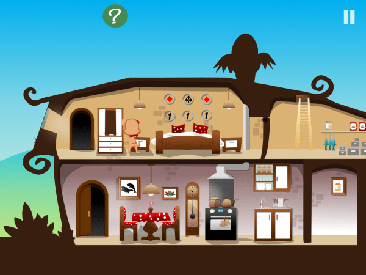
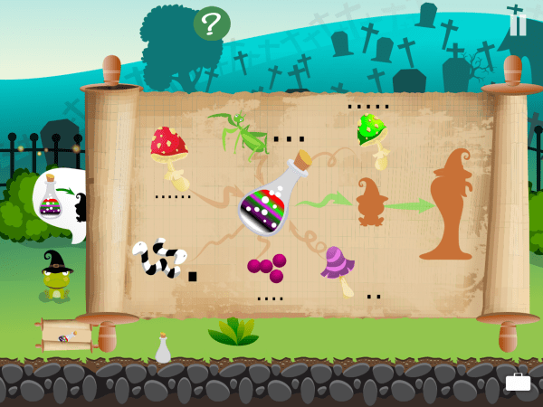
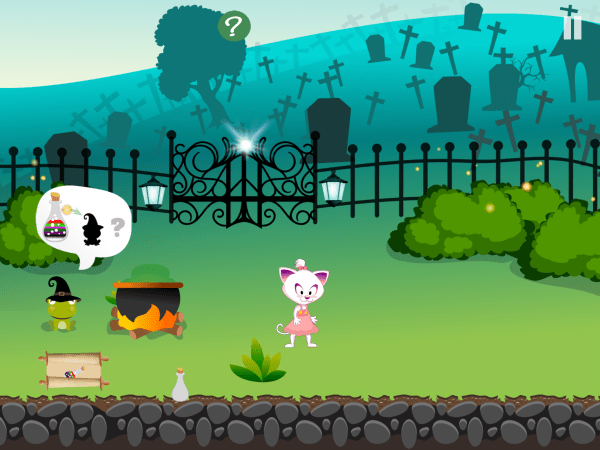

Tiny Story 1 – Point-and-click adventure
Immerse yourself in the charming world of Tiny Story. Travel through the little town of Tiny, talk to quirky characters and collect objects that will help you on your way.
Pick your favourite animal hero, wander through cosy streets, hidden paths and mysterious rooms, and piece together what happened so you can finally get back home.
Everything is built for touch: simple taps let you move, interact, use or combine items. No tiny hotspots, no random pixel-hunting – just a smooth, comfortable point-and-click experience on mobile.
Whether you love classic adventure games or you’re discovering the genre for the first time, Tiny Story 1 offers hours of relaxing, brain-teasing fun for all ages.
Funny & heart-warming
Meet adorable characters, read light-hearted dialogues and solve quests that are cute rather than scary.

Touch-friendly puzzles
Tap to collect, use and combine objects. Every interaction is designed for phones and tablets.

Stuck? Get gentle help
If you’re unsure what to do next, follow free walkthrough videos that guide you step by step.
